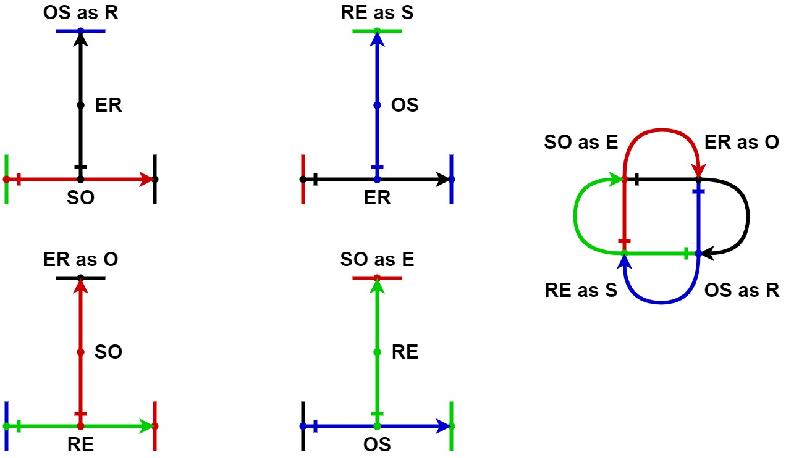

|
jsonRVM
json Relations (Model) Virtual Machine
|
|
jsonRVM
json Relations (Model) Virtual Machine
|
МО в теории множеств представляется как множество 4х взаимосвязанных множеств ссылок на кортежи длины 3, компонентами кортежей являются ссылки на кортежи. В качестве ссылок используются индексы кортежей.
RM = {E, O, R, S}, где
R -> (S×O)×E = {(s,o,e): s ∈ S, o ∈ O, e ∈ E} - множество кортежей отношений
S -> (R×E)×O = {(r,e,o): r ∈ R, e ∈ E, o ∈ O} - множество кортежей субъектов
O -> (E×R)×S = {(e,r,s): e ∈ E, r ∈ R, s ∈ S} - множество кортежей объектов
E -> (O×S)×R = {(o,s,r): o ∈ O, s ∈ S, r ∈ R} - множество кортежей сущностей
Внешний аспект (использование) в качестве источкика: R -> RE E -> ER O -> OS S -> SO
Внешний аспект (использование) в качестве назначения: R -> ER E -> RE O -> SO S -> OS
Внутренний аспект (структура) связи: E = OS R = SO O = ER S = RE
R -> SO×E = SO×(OS×R) = SO×(OS×(SO×E))
O -> ER×S = ER×(RE×O) = ER×(REx(ER×S))
S -> RE×O = RE×(ER×S) = RE×(ER×(RE×O))
E -> OS×R = OS×(SO×E) = OS×(SO×(OS×R))
R x E -> OS×(SO×R)xE
O x S -> Ox(RE×O)
S x O -> Sx(ER×S)
E x R -> Ex(OS×E)
R -> OS×E = OS×(SO×R) = OS×(SO×(OS×E)) = OS×(SO×...) = OSx...
O -> ER×S = ER×(RE×O) = ER×(REx(ER×S)) = ER×(RE×...) = ERx...
S -> RE×O = RE×(ER×S) = RE×(ER×(RE×O)) = RE×(ER×...) = REx...
E -> SO×R = SO×(OS×E) = SO×(OS×(SO×R)) = SO×(OS×...) = SOx...
R -> OS×E = ((SO×R)xO)x(RE×O)
O -> ER×S =
S -> RE×O =
E -> SO×R =
R -> OS×E = ((ERx...) x (REx...)) x (SO×...)
O -> ER×S = ((SOx...) x (SOx...)) x (RE×...)
S -> RE×O = ((OSx...) x (SOx...)) x (ER×...)
E -> SO×R = ((REx...) x (ERx...)) x (OS×...)
R -> OS×E = OS×(SO...) = OS × ((RE... x ER...) x (SO...))
O -> ER×S = ER×(RE...) = ER × ((OS... x SO...) x (ER...))
S -> RE×O = RE×(ER...) = RE × ((SO... x SO...) x (RE...))
E -> SO×R = SO×(OS...) = SO × ((ER... x RE...) x (SO...))
Получаем всего 8 типов связей:
Докажем правомочность сокращения 8 типов связей до 4, через подмену типов: R -> OS - удаление типа связи R, и использование вместо него типа связи OS O -> ER - удаление типа связи O, и использование вместо него типа связи ER S -> RE - удаление типа связи S, и использование вместо него типа связи RE E -> SO - удаление типа связи E, и использование вместо него типа связи SO
Для этого во первых надо доказать, что в связях вместо типов триплетов R, O, S, E можно использовать типы связей RE, OS, SO, ER cоответственно.
Во вторых доказать что
R -> ((O×S)×E) = (OS×E) = (RxE) O -> ((E×R)×S) = (ER×S) = (O×S) S -> ((R×E)×O) = (RE×O) = (SxO) E -> ((S×O)×R) = (SO×R) = (E×R)
OS ⊆ O×S = {(o,s): o ∈ O, s ∈ S} SO ⊆ S×O = {(s,o): s ∈ S, o ∈ O} RE ⊆ R×E = {(r,e): r ∈ R, e ∈ E} ER ⊆ E×R = {(e,r): e ∈ E, r ∈ R}
E = SO ⊆ (SO×OS) O = ER ⊆ (ER×RE) R = OS ⊆ (OS×SO) S = RE ⊆ (RE×ER)

Cтрелка A -> B, может быть прочитана как "A сопряженный с B"
Так же из этого следует, что множества E, O, R, S эквивалентны. Это ещё раз подтверждает, что в МО сущность можно использовать в качестве субъекта, отношения или объекта.
Кортеж сущность эквивалентен кортежу субъект-объекта:
e = (s,o,r) = ((s,o),r) = (so,r) = so = (so, re)
Кортеж объект эквивалентен кортежу сущность-отношения:
o = (e,r,s) = ((e,r),s) = (er,s) = er = (er, so)
Кортеж отношение эквивалентен кортежу объект-субъекта:
r = (o,s,e) = ((o,s),e) = (os,e) = os = (os, er)
Кортеж субъект эквивалентен кортежу отношение-сущности:
s = (r,e,o) = ((r,e),o) = (re,o) = re = (re, os)
Множество RM может быть эквивалентно представлено 4мя множествами кортежей длины 2:
RM = {ER, OS, RE, SO}, где
E = SO ⊆ SO×OS = {(so, os): so ∈ SO, os ∈ OS} - множество кортежей субъект-объект
O = ER ⊆ ER×RE = {(er, re): er ∈ ER, re ∈ RE} - множество кортежей сущность-отношение
R = OS ⊆ OS×SO = {(os, so): os ∈ OS, so ∈ SO} - множество кортежей объект-субъект
S = RE ⊆ RE×ER = {(re, er): re ∈ RE, er ∈ ER} - множество кортежей отношение-сущность
Свойство сохранения относительного типа ассоциации. Что это за свойства сохранения относительного типа ассоциации?
Занимательная аналогия с молекулярной биологией:
аденин (A) соединяется только с тимином (T) - двойная связь гуанин (G) — только с цитозином (C) - тройная связь